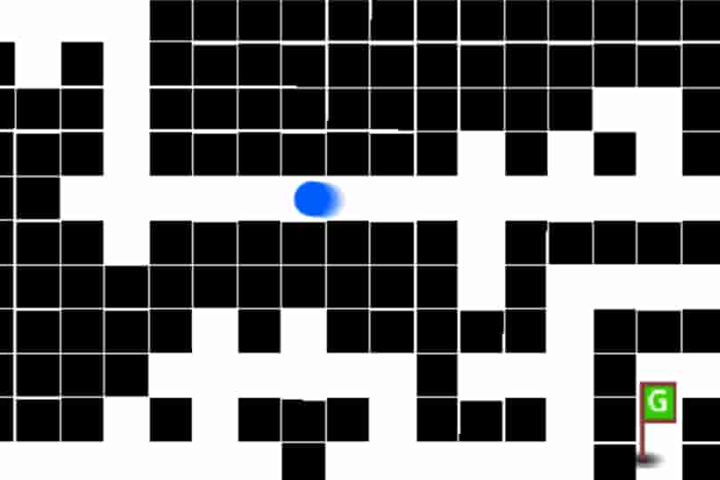

迷路自動作成ツール

リンク
以下のリンクから実際に作品をプレイすることができます。
SCRATCHで見る YouTubeで見る使用方法
迷路を自動で作成し、作成された迷路をプレイすることができるゲームです。
マップの作成
プレイすると初めにマップを作成します。マップの作成にはかなり時間がかかります。
キーの操作
ゲームがスタートすると矢印キーでプレイヤーを操作することができます。
クリア条件
ゲームが始まってから制限時間である30秒以内にマップ内にある「G」と書かれた緑の旗に触れるとゴールです。
マップの作成方法
順序
マップは初めにゴールまでの道をランダムに作成し、その後に他の道を作成しています。
方向の決め方
行くことができる道の中でランダムに方向を選び、その方向に進んで作ります。どの方向にも進めなくなるともう一度作り直します。